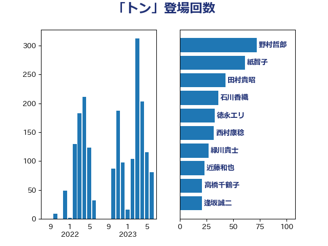

単語「トン」

| 野村哲郎 | 自由民主党 | 72 回 |
| 紙智子 | 日本共産党 | 61 回 |
| 田村貴昭 | 日本共産党 | 43 回 |
| 石川香織 | 立憲民主党 | 36 回 |
| 徳永エリ | 立憲民主党 | 33 回 |
| 西村康稔 | 自由民主党 | 32 回 |
| 緑川貴士 | 立憲民主党 | 27 回 |
| 近藤和也 | 立憲民主党 | 23 回 |
| 高橋千鶴子 | 日本共産党 | 21 回 |
| 逢坂誠二 | 立憲民主党 | 21 回 |
| 笠井亮 | 日本共産党 | 20 回 |
| 岩渕友 | 日本共産党 | 20 回 |
| 鈴木義弘 | 国民民主党 | 19 回 |
| 舟山康江 | 国民民主党 | 18 回 |
| 山本剛正 | 日本維新の会 | 18 回 |
| 緒方林太郎 | 無所属 | 17 回 |
| ながえ孝子 | 無所属 | 17 回 |
| 武部新 | 自由民主党 | 16 回 |
| 猪瀬直樹 | 日本維新の会 | 15 回 |
| 梅谷守 | 立憲民主党 | 15 回 |
| 辻元清美 | 立憲民主党 | 14 回 |
| 斉藤鉄夫 | 公明党 | 14 回 |
| 山田勝彦 | 立憲民主党 | 14 回 |
| 西村明宏 | 自由民主党 | 13 回 |
| 篠原孝 | 立憲民主党 | 13 回 |
| 櫻井周 | 立憲民主党 | 13 回 |
| 宮崎勝 | 公明党 | 13 回 |
| 鈴木俊一 | 自由民主党 | 12 回 |
| 稲津久 | 公明党 | 12 回 |
| 山下芳生 | 日本共産党 | 12 回 |
| 小野泰輔 | 日本維新の会 | 11 回 |
| 野田国義 | 立憲民主党 | 10 回 |
| 田村智子 | 日本共産党 | 10 回 |
| 岸田文雄 | 自由民主党 | 10 回 |
| 山口壯 | 自由民主党 | 10 回 |
| 嘉田由紀子 | 無所属 | 10 回 |
| 金子俊平 | 自由民主党 | 9 回 |
| 野中厚 | 自由民主党 | 9 回 |
| 藤岡隆雄 | 立憲民主党 | 9 回 |
| 萩生田光一 | 自由民主党 | 9 回 |
| 空本誠喜 | 日本維新の会 | 9 回 |
| 田中健 | 国民民主党 | 9 回 |
| 平山佐知子 | 無所属 | 9 回 |
| 前川清成 | 日本維新の会 | 9 回 |
| 高良鉄美 | 無所属 | 8 回 |
| 鈴木敦 | 国民民主党 | 8 回 |
| 田名部匡代 | 立憲民主党 | 8 回 |
| 三木圭恵 | 日本維新の会 | 8 回 |
| 青島健太 | 日本維新の会 | 7 回 |
| 谷合正明 | 公明党 | 7 回 |
| 西野太亮 | 自由民主党 | 7 回 |
| 太田房江 | 自由民主党 | 7 回 |
| 大島敦 | 立憲民主党 | 7 回 |
| 堤かなめ | 立憲民主党 | 7 回 |
| 中川郁子 | 自由民主党 | 7 回 |
| 金城泰邦 | 公明党 | 6 回 |
| 遠藤良太 | 日本維新の会 | 6 回 |
| 芳賀道也 | 国民民主党 | 6 回 |
| 穀田恵二 | 日本共産党 | 6 回 |
| 江藤拓 | 自由民主党 | 6 回 |
| 末松信介 | 自由民主党 | 6 回 |
| 木村英子 | れいわ新選組 | 6 回 |
| 土田慎 | 自由民主党 | 6 回 |
| 住吉寛紀 | 日本維新の会 | 6 回 |
| 伊波洋一 | 無所属 | 6 回 |
| 串田誠一 | 日本維新の会 | 6 回 |
| 下野六太 | 公明党 | 6 回 |
| 上杉謙太郎 | 自由民主党 | 6 回 |
| 野間健 | 立憲民主党 | 5 回 |
| 足立敏之 | 自由民主党 | 5 回 |
| 谷田川元 | 立憲民主党 | 5 回 |
| 藤巻健太 | 日本維新の会 | 5 回 |
| 美延映夫 | 日本維新の会 | 5 回 |
| 竹内真二 | 公明党 | 5 回 |
| 武村展英 | 自由民主党 | 5 回 |
| 横山信一 | 公明党 | 5 回 |
| 榛葉賀津也 | 国民民主党 | 5 回 |
| 村田享子 | 立憲民主党 | 5 回 |
| 後藤祐一 | 立憲民主党 | 5 回 |
| 山口晋 | 自由民主党 | 5 回 |
| 須藤元気 | 無所属 | 4 回 |
| 青木愛 | 立憲民主党 | 4 回 |
| 長友慎治 | 国民民主党 | 4 回 |
| 羽田次郎 | 立憲民主党 | 4 回 |
| 神津たけし | 立憲民主党 | 4 回 |
| 石垣のりこ | 立憲民主党 | 4 回 |
| 矢倉克夫 | 公明党 | 4 回 |
| 渡辺猛之 | 自由民主党 | 4 回 |
| 清水貴之 | 日本維新の会 | 4 回 |
| 池畑浩太朗 | 日本維新の会 | 4 回 |
| 梅村みずほ | 日本維新の会 | 4 回 |
| 東国幹 | 自由民主党 | 4 回 |
| 山本佐知子 | 自由民主党 | 4 回 |
| 大西健介 | 立憲民主党 | 4 回 |
| 中村裕之 | 自由民主党 | 4 回 |
| 鬼木誠 | 立憲民主党 | 3 回 |
| 鎌田さゆり | 立憲民主党 | 3 回 |
| 輿水恵一 | 公明党 | 3 回 |
| 船橋利実 | 自由民主党 | 3 回 |
| 福島伸享 | 無所属 | 3 回 |
| 神谷裕 | 立憲民主党 | 3 回 |
| 石井拓 | 自由民主党 | 3 回 |
| 渡辺創 | 立憲民主党 | 3 回 |
| 泉健太 | 立憲民主党 | 3 回 |
| 杉本和巳 | 日本維新の会 | 3 回 |
| 新垣邦男 | 立憲民主党 | 3 回 |
| 庄子賢一 | 公明党 | 3 回 |
| 小沢雅仁 | 立憲民主党 | 3 回 |
| 小池晃 | 日本共産党 | 3 回 |
| 宮本徹 | 日本共産党 | 3 回 |
| 室井邦彦 | 日本維新の会 | 3 回 |
| 吉井章 | 自由民主党 | 3 回 |
| 務台俊介 | 自由民主党 | 3 回 |
| 井上貴博 | 自由民主党 | 3 回 |
| 高見康裕 | 自由民主党 | 2 回 |
| 高橋光男 | 公明党 | 2 回 |
| 青山大人 | 立憲民主党 | 2 回 |
| 阿達雅志 | 自由民主党 | 2 回 |
| 長峯誠 | 自由民主党 | 2 回 |
| 金子道仁 | 日本維新の会 | 2 回 |
| 野田佳彦 | 立憲民主党 | 2 回 |
| 重徳和彦 | 立憲民主党 | 2 回 |
| 赤嶺政賢 | 日本共産党 | 2 回 |
| 角田秀穂 | 公明党 | 2 回 |
| 西銘恒三郎 | 自由民主党 | 2 回 |
| 若宮健嗣 | 自由民主党 | 2 回 |
| 細田健一 | 自由民主党 | 2 回 |
| 竹詰仁 | 国民民主党 | 2 回 |
| 福岡資麿 | 自由民主党 | 2 回 |
| 神田潤一 | 自由民主党 | 2 回 |
| 石川大我 | 立憲民主党 | 2 回 |
| 石川博崇 | 公明党 | 2 回 |
| 石井苗子 | 日本維新の会 | 2 回 |
| 石井章 | 日本維新の会 | 2 回 |
| 渡辺孝一 | 自由民主党 | 2 回 |
| 浜野喜史 | 国民民主党 | 2 回 |
| 浜田靖一 | 自由民主党 | 2 回 |
| 河野太郎 | 自由民主党 | 2 回 |
| 河西宏一 | 公明党 | 2 回 |
| 森田俊和 | 立憲民主党 | 2 回 |
| 森屋隆 | 立憲民主党 | 2 回 |
| 林芳正 | 自由民主党 | 2 回 |
| 杉田水脈 | 自由民主党 | 2 回 |
| 早稲田ゆき | 立憲民主党 | 2 回 |
| 日下正喜 | 公明党 | 2 回 |
| 新妻秀規 | 公明党 | 2 回 |
| 広瀬めぐみ | 自由民主党 | 2 回 |
| 小野田紀美 | 自由民主党 | 2 回 |
| 小山展弘 | 立憲民主党 | 2 回 |
| 寺田静 | 無所属 | 2 回 |
| 大家敏志 | 自由民主党 | 2 回 |
| 塩田博昭 | 公明党 | 2 回 |
| 城井崇 | 立憲民主党 | 2 回 |
| 吉田統彦 | 立憲民主党 | 2 回 |
| 北神圭朗 | 無所属 | 2 回 |
| 伊藤渉 | 公明党 | 2 回 |
| 中田宏 | 自由民主党 | 2 回 |
| 中川宏昌 | 公明党 | 2 回 |
| 上田英俊 | 自由民主党 | 2 回 |
| 上月良祐 | 自由民主党 | 2 回 |
| 高木かおり | 日本維新の会 | 1 回 |
| 馬場伸幸 | 日本維新の会 | 1 回 |
| 金子恵美 | 立憲民主党 | 1 回 |
| 進藤金日子 | 自由民主党 | 1 回 |
| 逢沢一郎 | 自由民主党 | 1 回 |
| 越智俊之 | 自由民主党 | 1 回 |
| 藤井比早之 | 自由民主党 | 1 回 |
| 荒井優 | 立憲民主党 | 1 回 |
| 若松謙維 | 公明党 | 1 回 |
| 簗和生 | 自由民主党 | 1 回 |
| 穂坂泰 | 自由民主党 | 1 回 |
| 秋野公造 | 公明党 | 1 回 |
| 福山哲郎 | 立憲民主党 | 1 回 |
| 石川昭政 | 自由民主党 | 1 回 |
| 田島麻衣子 | 立憲民主党 | 1 回 |
| 玉木雄一郎 | 国民民主党 | 1 回 |
| 牧野たかお | 自由民主党 | 1 回 |
| 片山さつき | 自由民主党 | 1 回 |
| 熊谷裕人 | 立憲民主党 | 1 回 |
| 漆間譲司 | 日本維新の会 | 1 回 |
| 浅野哲 | 国民民主党 | 1 回 |
| 浅田均 | 日本維新の会 | 1 回 |
| 武井俊輔 | 自由民主党 | 1 回 |
| 櫛渕万里 | れいわ新選組 | 1 回 |
| 松野明美 | 日本維新の会 | 1 回 |
| 東徹 | 日本維新の会 | 1 回 |
| 末松義規 | 立憲民主党 | 1 回 |
| 朝日健太郎 | 自由民主党 | 1 回 |
| 平林晃 | 公明党 | 1 回 |
| 川田龍平 | 立憲民主党 | 1 回 |
| 岸真紀子 | 立憲民主党 | 1 回 |
| 山崎誠 | 立憲民主党 | 1 回 |
| 山崎正恭 | 公明党 | 1 回 |
| 山岡達丸 | 立憲民主党 | 1 回 |
| 宗清皇一 | 自由民主党 | 1 回 |
| 守島正 | 日本維新の会 | 1 回 |
| 奥下剛光 | 日本維新の会 | 1 回 |
| 大塚耕平 | 国民民主党 | 1 回 |
| 堂込麻紀子 | 無所属 | 1 回 |
| 土屋品子 | 自由民主党 | 1 回 |
| 國場幸之助 | 自由民主党 | 1 回 |
| 北村経夫 | 自由民主党 | 1 回 |
| 勝部賢志 | 立憲民主党 | 1 回 |
| 加藤鮎子 | 自由民主党 | 1 回 |
| 伊藤孝江 | 公明党 | 1 回 |
| 今枝宗一郎 | 自由民主党 | 1 回 |
| 一谷勇一郎 | 日本維新の会 | 1 回 |